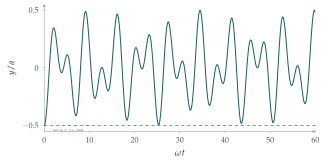

STEP III 2014，第 10 題
繼續之前，請先閱讀題目（原題為英文）。題目載於 STEP Support Programme 的題目資料庫： step.maths.org/questions/14-s3-q10
引子
一個掛在彈簧上的質點，會以簡單而規律的方式上下彈動。把兩個質點用彈簧連起來，運動看起來就複雜得多：每個質點都不規則地忽動忽停，能量在兩者之間來回流轉。然而在這複雜的表象背後，藏着兩種極其簡單的運動，稱為簡正模態（normal modes）：兩個質點或一起同向運動，或恰好反向運動，而每個模態各以自己的頻率（frequency）振盪。系統的任何運動，都是這兩個模態的組合。
本題要找出夾在三條彈簧之間的兩個質點的簡正模態，然後證明一個令人驚訝的結論：若系統由靜止開始，而其中一個質點有初始位移，則系統永遠不會回到起始位置。原因在於兩個頻率之比是 \(\sqrt3\)，而 \(\sqrt3\) 是無理數（irrational number）。
動筆之前
設 \(X\) 與 \(P\) 的距離為 \(a + x\)，\(Y\) 與 \(Q\) 的距離為 \(a + y\)，那麼中間的彈簧 \(XY\) 有多長？當 \(x\) 和 \(y\) 皆為正數時，哪些彈簧被拉長，哪些被壓縮？
三段長度之和為 \(3a\)，所以 \(XY = 3a - (a + x) - (a + y) = a - x - y\)。當 \(x, y > 0\) 時，外側兩條彈簧被拉長（伸長量分別為 \(x\) 和 \(y\)），中間一條則被壓縮（壓縮量為 \(x + y\)）。
逐步解題
階段 1 運動方程
沿着由 \(P\) 指向 \(Q\) 的方向量度 \(x\)。彈簧 \(PX\) 的伸長量（extension）為 \(x\)，所以它的張力（tension）\(\frac{\lambda x}{a}\) 把 \(X\) 拉回 \(P\) 的方向。彈簧 \(XY\) 的伸長量為 \(-(x + y)\)，所以它的張力 \(-\frac{\lambda(x + y)}{a}\) 把 \(X\) 拉向 \(Y\)（負的張力即是推力）。因此 \[m\ddot x = -\frac{\lambda x}{a} - \frac{\lambda(x + y)}{a} = -\frac{\lambda}{a}(2x + y). \qed\] 根據對稱性（把 \(X\) 與 \(Y\)、\(P\) 與 \(Q\) 的角色互換）， \[m\ddot y = -\frac{\lambda}{a}(2y + x).\]
階段 2 解耦
每條方程都同時涉及 \(x\) 和 \(y\)。把兩條方程怎樣組合，才會只涉及 \(x\) 和 \(y\) 的某一個組合？
把兩式相減及相加，得 \[m(\ddot x - \ddot y) = -\frac{\lambda}{a}(x - y), \qquad m(\ddot x + \ddot y) = -\frac{3\lambda}{a}(x + y).\] 兩者都是簡諧運動（simple harmonic motion）的方程：\(x - y\) 以 \(\omega^2 = \frac{\lambda}{ma}\) 振盪，而 \(x + y\) 則以 \(3\omega^2\) 振盪。
階段 3 初始條件
起初 \(XP = a\) 及 \(YQ = \frac12a\)，所以 \(x = 0\) 及 \(y = -\frac12a\)，而且兩個質點都處於靜止。因此在 \(t = 0\) 時，\(x - y = \frac12a\) 及 \(x + y = -\frac12a\)，而兩者的變化率皆為零，由此得 \[x - y = \tfrac12a\cos\omega t, \qquad x + y = -\tfrac12a\cos\sqrt3\,\omega t.\] 所以 \(A = \frac12a\) 及 \(B = 0\)。■
階段 4 永不返回
把 \(y\) 寫成 \(t\) 的函數。若 \(Y\) 要回到起始位置，便須 \(y = -\frac12a\)。這時兩個餘弦必須各等於甚麼？
兩式相減，得 \(y = \frac12\bigl((x + y) - (x - y)\bigr) = -\frac14a\bigl(\cos\sqrt3\,\omega t + \cos\omega t\bigr)\)。要 \(y = -\frac12a\)，便需要 \(\cos\sqrt3\,\omega t + \cos\omega t = 2\)；由於每個餘弦最大只能是 \(1\)，兩者必須都等於 \(1\)： \[\omega t = 2\pi k, \qquad \sqrt3\,\omega t = 2\pi j\] 其中 \(k\) 和 \(j\) 為整數。當 \(t > 0\) 時，\(k \geq 1\)，兩式相除得 \(\sqrt3 = \frac jk\)，但 \(\sqrt3\) 是無理數，所以這是不可能的。因此 \(Y\) 永遠不會回到起始位置。■

回顧
找出能夠解耦的組合。\(x - y\) 和 \(x + y\) 各自滿足一條屬於自己的方程。
對稱性會提示這些組合。把左右兩邊互換，系統保持不變，所以對稱和反對稱的組合是很自然的選擇。
無理性會帶來物理後果。運動之所以不是週期性的，是因為頻率之比是無理數。
背後的數學
簡正模態就是特徵向量
把兩條方程寫成一條矩陣方程： \[m\begin{pmatrix}\ddot x \\ \ddot y\end{pmatrix} = -\frac{\lambda}{a}\begin{pmatrix}2 & 1 \\ 1 & 2\end{pmatrix}\begin{pmatrix}x \\ y\end{pmatrix}.\] 能夠解耦的組合，正是這個矩陣的特徵向量（eigenvectors）：\((1, -1)\)，其特徵值（eigenvalue）為 \(1\)；以及 \((1, 1)\)，其特徵值為 \(3\)（第 7.2 節）。在第一個模態中，\(x = -y\)：兩個質點沿直線同向運動（記住 \(x\) 和 \(y\) 是從相反的兩端量度的），中間的彈簧長度保持不變。在第二個模態中，\(x = y\)：兩個質點反向運動，把中間的彈簧一壓一拉，頻率因而較高。頻率的平方就是特徵值乘以 \(\frac{\lambda}{ma}\)。
無論有多少個質點和彈簧，這個方法都適用。一個由 \(N\) 個耦合振子（coupled oscillators）組成的系統有 \(N\) 個簡正模態，它們由一個對稱矩陣的特徵向量給出，而譜定理（spectral theorem）保證這些模態必定存在，並且互相垂直。分子以簡正模態振動，化學家正是憑分子所吸收的紅外光來辨認它們。建築物和橋樑也有簡正模態，工程師必須令這些模態的頻率遠離風和地震的頻率。當質點的數目趨向無限時，簡正模態就變成振動弦線的諧波（harmonics），這正是傅立葉分析（Fourier analysis）的起點。
接近而不到達
雖然 \(Y\) 永遠不會剛好返回，但它可以接近到任意程度。原因是克羅內克（Kronecker）的一條定理：若 \(\alpha\) 是無理數，則各倍數 \(\alpha, 2\alpha, 3\alpha, \ldots\) 取模 \(1\) 之後，可以任意接近 \([0, 1]\) 內的每一個數。因此我們可以找到一些時刻，使 \(\omega t\) 是 \(2\pi\) 的倍數，而 \(\sqrt3\,\omega t\) 與另一個這樣的倍數之差小於任何指定的容許誤差。這種運動是準週期（quasi-periodic）的：它在一個環面（torus）上不斷纏繞（每個模態對應一個角），卻永遠不會閉合。有理與無理頻率比之間的這種區別，同樣是關於太陽系穩定性的 KAM 定理的核心。
思維技巧
當方程互相耦合時，設法找出各自獨立演變的變數組合。在線性問題中，這些組合就是特徵向量。
這與 第 10.6 節 中質心和相對坐標的想法如出一轍。到了大學，它就成為對角化（diagonalisation）：選取一組令矩陣成為對角矩陣的基（basis），一組耦合的方程便會分拆成各自獨立的方程。
延伸練習
能量。證明總能量 \(\frac12m(\dot x^2 + \dot y^2) + \frac{\lambda}{2a}\bigl(x^2 + y^2 + (x + y)^2\bigr)\) 是常數，並證明它可以分拆成兩項之和，每個簡正模態各佔一項，而每一項本身都是常數。
純模態。應該怎樣讓兩個質點開始運動，才能使運動是週期性的，且週期為 \(\frac{2\pi}{\omega}\)？若週期為 \(\frac{2\pi}{\sqrt3\,\omega}\) 又如何？
較硬的中間彈簧。若中間彈簧的彈性模量（modulus of elasticity）是 \(\mu\) 而不是 \(\lambda\)，求兩個簡正模態的頻率。當 \(\mu/\lambda\) 取哪些值時，所有運動都是週期性的？
三個質點。三個質量相等的質點排成一線，由四條相同的彈簧連接在兩個固定點之間。求對應的矩陣及其特徵值（\(2 - \sqrt2\), \(2\), \(2 + \sqrt2\)），並描述三個簡正模態。
延伸閱讀
A. P. French, Vibrations and Waves（MIT Introductory Physics Series），第 5 章，講述耦合振子與簡正模態。
Gilbert Strang, Introduction to Linear Algebra（Wellesley-Cambridge），關於特徵值的一章，當中以彈簧與質點作為主要例子。
Steven Strogatz, Nonlinear Dynamics and Chaos（CRC Press），第 8 章，講述環面上的準週期運動。